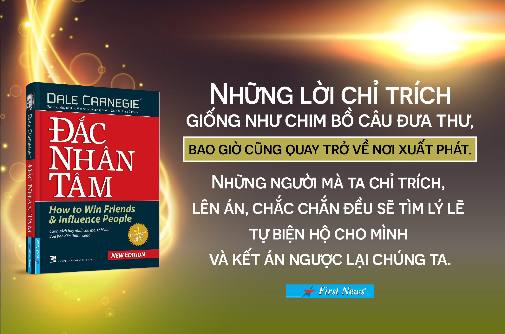
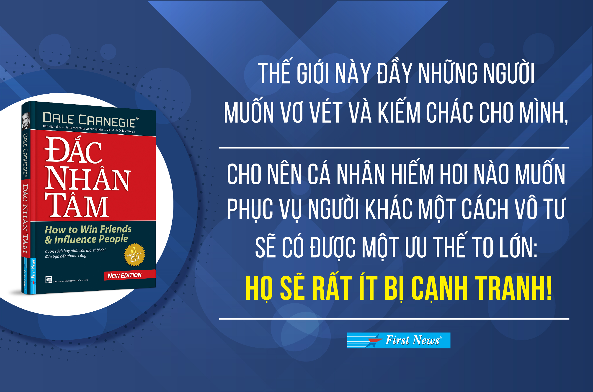
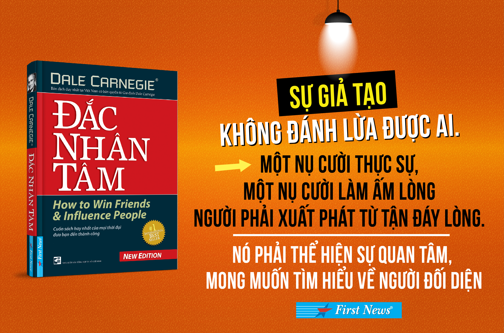
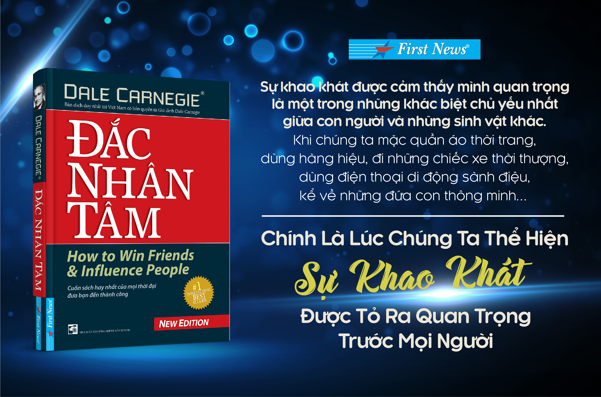
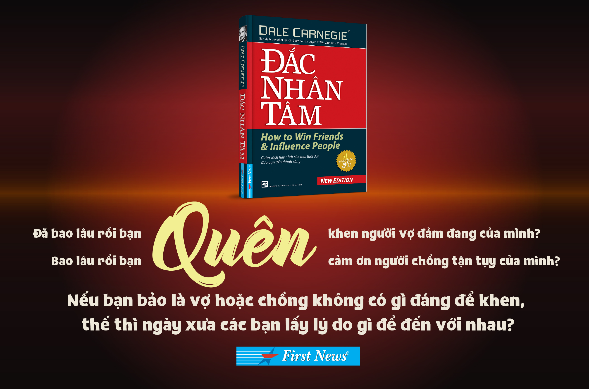

Công ty phát hành: First News - Trí Việt
Tác giả: Dale Carnegie
Ngày xuất bản: 03-2016
Kích thước: 14.5 x 20.5 cm
Nhà xuất bản: Nhà Xuất Bản Tổng hợp TP.HCM
Loại bìa: Bìa mềm
Số trang: 320
Tại sao Đắc Nhân Tâm luôn trong Top sách bán chạy nhất thế giới? Bởi vì đó là cuốn sách mọi người đều nên đọc. Hiện nay có một sự hiểu nhầm đã xảy ra. Tuy Đắc Nhân Tâm là tựa sách hầu hết mọi người đều biết đến, vì những danh tiếng và mức độ phổ biến, nhưng một số người lại “ngại” đọc. Lý do vì họ tưởng đây là cuốn sách “dạy làm người” nên có tâm lý e ngại. Có lẽ là do khi giới thiệu về cuốn sách, người ta luôn gắn với miêu tả đây là “nghệ thuật đối nhân xử thế”, “nghệ thuật thu phục lòng người”… Những cụm từ này đã không còn hợp với hiện nay nữa, gây cảm giác xa lạ và không thực tế.  Nhưng đâu phải thế, Đắc Nhân Tâm là cuốn sách không hề lỗi thời! Những vấn đề được chỉ ra trong đó đều là căn bản ứng xử giữa người với người. Nếu diễn giải theo từ ngữ bây giờ, có thể gọi đây là “giáo trình” giúp hiểu mình – hiểu người để thành công trong giao tiếp. Có ai sống mà không cần giao tiếp? Có bao nhiêu người ngày ngày mệt mỏi, khổ sở vì gặp phải các vấn đề trong giao tiếp? Vì thế, Đắc Nhân Tâm chính là cuốn sách dành cho mọi người. Con cái nên đọc – cha mẹ càng nên đọc, nhân viên nên đọc – sếp càng nên đọc, người quen nhau nên đọc – người lạ nhau càng nên đọc…. Và đó mới chính thật là lý do Đắc Nhân Tâm luôn lọt vào Top sách bán chạy nhất thế giới, dù đã ra đời cách đây gần 80 năm.  Có lẽ sẽ có người vừa đọc vừa nghĩ, mấy điều trong sách này đơn giản mà, ai chẳng biết? Đúng thế, vì toàn bộ đều là những quy tắc, những cách cư xử căn bản giữa chúng ta với nhau thôi. Kiểu như “Không chỉ trích, oán trách hay than phiền”, “Thành thật khen ngợi và biết ơn người khác”, “Thật lòng làm cho người khác thấy rằng họ quan trọng”… Những điều này đúng thật là ai cũng biết, nhưng bạn có chắc bạn nhớ được và làm được những điều đơn giản đó? Vì vậy, cuốn sách mới ra đời, để giúp bạn thực hành.  Nhưng có lẽ đa số người đọc sẽ thành thật gật gù đồng ý với từng trang sách. Ồ nếu như bình tâm suy xét lại mọi việc, thì trong bất cứ trường hợp nào mình cũng có thể cư xử đúng mực, không làm người khác tổn thương, giúp bầu không khí luôn thoải mái, và thế là cả hai bên đều vui vẻ, công việc cũng vì thế mà suôn sẻ, thành công hơn. Vậy chứ mà cũng không dễ, bởi “cái tôi” của mỗi người thường chiến thắng tâm trí trong đa số trường hợp. Để thỏa mãn nó, chúng ta hay mắc sai lầm không đáng. Đó cũng chính là lý do Đắc Nhân Tâm có mặt, để nhắc nhở và từng chút giúp ta uốn nắn chính “cái tôi” của mình.  Với giọng văn giản dị, cách trình bày gần gũi nhưng cực kỳ khoa học bằng cách đúc rút những điều mối chốt ở cuối chương, Đắc Nhân Tâm là cuốn sách hiếm hoi không kén chọn người đọc. Bất cứ ai cũng có thể đồng cảm. Đây là công trình tâm huyết cả đời của Ngài Dale Carnegie, xuất phát từ chính nhu cầu của Dale khi cảm thấy cuộc đời mình sẽ không phạm phải quá nhiều sai lầm đã qua nếu như được học tử tế về cách cư xử trong cuộc sống. Ông đã viết bằng chính trải nghiệm phong phú cả đời mình. Thậm chí ông còn thuê cả một nhà nghiên cứu chuyên nghiệp để tìm và cùng ông nghiên cứu các tài liệu liên quan. Và cuốn sách hữu ích đến mức vừa ra đời đã phải tái bản liên tục, trở thành hiện tượng chưa từng có trong bối cảnh xuất bản ảm đạm của nước Anh lúc đó. Và mãi đến bây giờ.  Từ ngày ấy, Đắc Nhân Tâm trở thành cuốn sách không-chịu-nằm-yên-trên-kệ. Ngoài ý được tái bản liên tục ở khắp nơi trên thế giới, thì cụm từ này còn có một ý khác, đó là cuốn sách đã được Ngài Dale bổ sung và hiệu chỉnh liên tục các câu chuyện mới, cách diễn đạt mới, nên ở mỗi lần xuất hiện, Đắc Nhân Tâm đều có những điều mới mẻ. Việc này cũng tiếp tục được con trai ông thực hiện sau khi ông qua đời, như ý nguyện của ông. Được đánh giá là cuốn sách có sức lan tỏa rộng lớn, được dịch ra hầu hết các ngôn ngữ trên thế giới và luôn nằm trong Top sách bán chạy ở mọi thị trường xuất bản, Đắc Nhân Tâm đã có đời sống xứng tầm với giá trị thực tế của mình. Đây có thể coi là một trong những cuốn sách dòng self-hepl chính thống đầu tiên. Và Ngài Dale cũng trở thành một trong những tác giả ảnh hưởng trực tiếp nhiều nhất đến sự thay đổi tích cực của hàng triệu độc giả trên thế giới